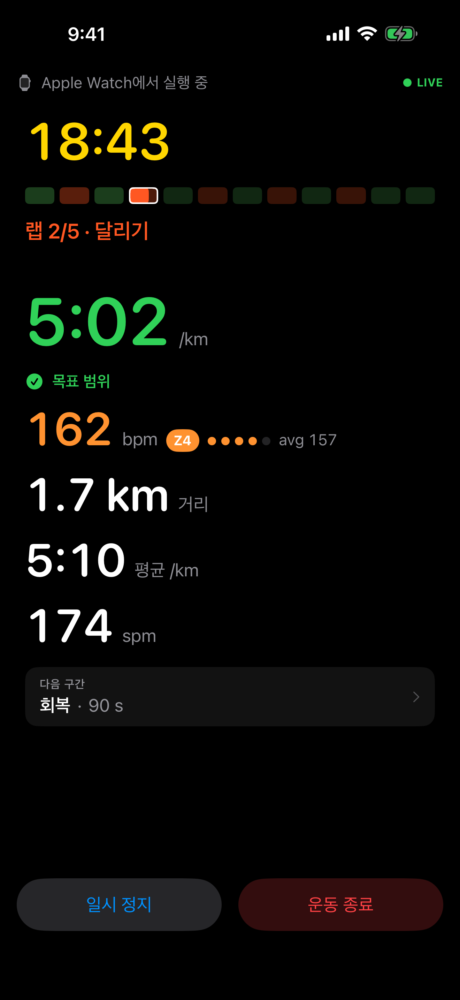
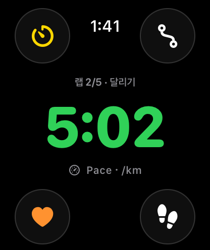
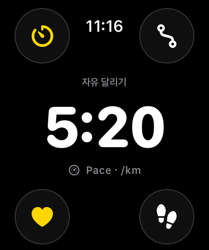

러닝 습관 만들기
달리기와 걷기를 번갈아 시작하거나 기존 경험에 맞는 규칙적인 훈련을 선택하세요.
러닝 플랜 · IPHONE & APPLE WATCH
달리는 습관을 만들거나 다음 레이스를 준비하세요. RunCraft는 플랜, 훈련 페이스, 운동 안내를 한곳에 모아 오늘과 다음 단계를 이해하도록 돕습니다.
무료 다운로드 · 21일 전체 체험 · 구독 없음


목표에서 시작
레이스 일정이 없어도 시작할 수 있습니다.
달리기와 걷기를 번갈아 시작하거나 기존 경험에 맞는 규칙적인 훈련을 선택하세요.
목표를 먼저 저장한 뒤, 지원되는 플랜과 필요한 준비 및 기간을 살펴보세요.
체험 기간이나 Lifetime으로 자유 달리기를 시작하고 러닝 기록을 모아 두세요.
규칙적인 러닝을 선택하거나 레이스 날짜와 거리를 저장하세요. 이름은 선택 사항입니다. 목표 저장만으로 현재 플랜이 바뀌지는 않습니다.
관련 러닝 기록과 저장된 입력을 검토하세요. 달라진 점을 수정하고 플랜에 필요한 부족한 정보만 보완하세요.
세션, 일정, 준비 조건을 확인한 뒤 플랜을 사용하세요. 목표가 있다고 모든 플랜이 적합한 것은 아닙니다.
달리기 전
예정된 세션과 목적을 최근 러닝과 함께 확인하세요. 서로 다른 훈련에는 각자의 페이스와 역할이 있습니다.
달리는 동안
iPhone이나 Apple Watch에서 현재 단계, 페이스, 진행 상황을 보며 구조화 운동을 따르세요. 다음 동작을 확인하는 부담을 줄여 줍니다.

달린 후
거리, 구간, 페이스, 심박수를 이용 가능한 운동 자각도 및 날씨와 함께 살펴보세요. 플랜의 끝은 새로운 선택의 시점이지 자동 강도 상승이 아닙니다.
시작 방법, 페이스의 의미, 레이스나 휴식 후의 다음 단계.
간단한 요금
무료 다운로드. Lifetime은 선택 가능한 일회성 구매입니다. 구독이나 자동 갱신은 없습니다.
플랜, 안내에 따른 러닝 기록, 분석을 사용해 본 뒤 구매를 결정하세요.
Apple 건강 운동 가져오기와 기본 이력, VDOT, 거리 확인을 계속할 수 있습니다. 체험 후 RunCraft에서 운동을 시작하려면 Lifetime이 필요합니다.
플랜과 RunCraft 기록을 잠금 해제합니다. 구매 복원을 지원하며 대상이 되는 기존 유료 사용자는 전체 이용 권한을 유지합니다.
체험은 처음 App Store에서 RunCraft를 받은 날부터 시작하며 첫 실행일 기준이 아닙니다. 현재 지역 가격은 앱에서 확인하세요. 대상 Lifetime 구매는 Apple 가족 공유를 지원합니다.
아니요. iPhone에서 직접 안내 운동을 실행할 수 있습니다. 페어링한 Apple Watch로 손목에서 진행 상황을 확인하고 조작할 수 있습니다. 데이터는 기기와 권한에 따라 달라집니다.
모든 경로에 필요하지는 않습니다. 달리기와 걷기 또는 자유 달리기로 시작할 수 있습니다. 일부 플랜은 관련 경험, 페이스 참고값, 충분한 준비 기간이 필요합니다.
아니요. 목표를 먼저 저장한 뒤 훈련을 별도로 설정합니다. 기존 훈련과 이력은 유지되며 새 플랜은 내용과 준비 조건을 검토해야 합니다.
아니요. 회복 관찰은 배경과 주의점을 제공합니다. 대체 운동을 자동 계산하거나 훈련 준비가 되었다고 보장하지 않습니다.
다음 방향과 관련 저장 정보를 검토하세요. 새 플랜에는 별도 검토가 필요하며 과거 기록만으로 현재 준비나 회복 상태가 확인되지는 않습니다.
RunCraft 계정이 필요 없고 광고나 제삼자 분석 추적도 없습니다. 데이터는 기기에서 처리되고 일부 기록은 개인 iCloud 데이터베이스로 동기화할 수 있습니다. 지원용 진단 파일은 직접 공유할 때만 전송됩니다.
RUNCRAFT
플랜, 운동, 앱에 관한 질문이 있다면 연락해 주세요. support@marstudio.app